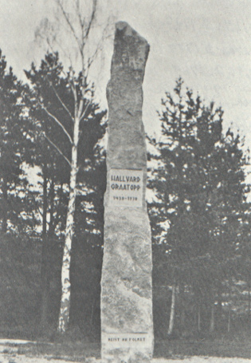

Hallvard Torbjornson was born on the Vraalstad gaard in Telemark, Norway around 1400. He was a farmer by trade, but politics intervened. The Black Death, which reeked havoc throughout Europe during the 14th century, had decimated the ruling families of Scandinavia. King Olav of Denmark and Norway was the last native ruler in Scandinavia. When he died in 1387, his wife Margareta took over the rule of those two countries and then Sweden as well. In 1397 in the town of Kalmar in Sweden the Union of the three lands under a single crown was made offical and Erik of Pomerania was chosen as king. Erik fatefully chose to govern the three kingdoms from Denmark using the Danish aristocracy.
| The Danish aristocracy naturally saw to their best interests and slowly alienated the residents of Sweden and Norway whom they tried to rule. In Sweden Engelbrekt Engelbrektson led a successful rebellion in 1434. In 1436 Amund Sigurdsson tried to do the same in Norway, but failed. Enter Hallvard Torbjornson of Vraalstad. He raised an army of peasants to challenge the harsh Danish rule in Oslo. Hallvard and his army of Norwegians fought the Danes in 1438, but failed to secure their freedom. This third rebellion in under a decade, however, led the Danish aristocracy to turn on King Erik, whose harsh policies had fomented the distain in which Danes were now held by their northern neighbors. They saw to the ouster of King Erik in 1439. Hallvard was made a Herr (the equivalent of a Lord) and returned to farming, his gray hair earning him the moniker "Graatopp". In 1442 the Swedes were official regranted sovereignty, however, the Danes aristocracy was not to give up Norway so easily. The next decade saw them reconquer the country and annex outright the Norwegian colonies of Greenland, Iceland, and the Faroes. Danish aristocrats ruled the land and the Danish language was spoken in the cities. Hallvard is not recorded to have resisted this subjugation. Perhaps he thought it futile because of the failure of his earlier attempt. He had at least one son and lived to a ripe old age, dying in Tordal in 1475. Norway didn't win independence from Denmark until 1814. |

|